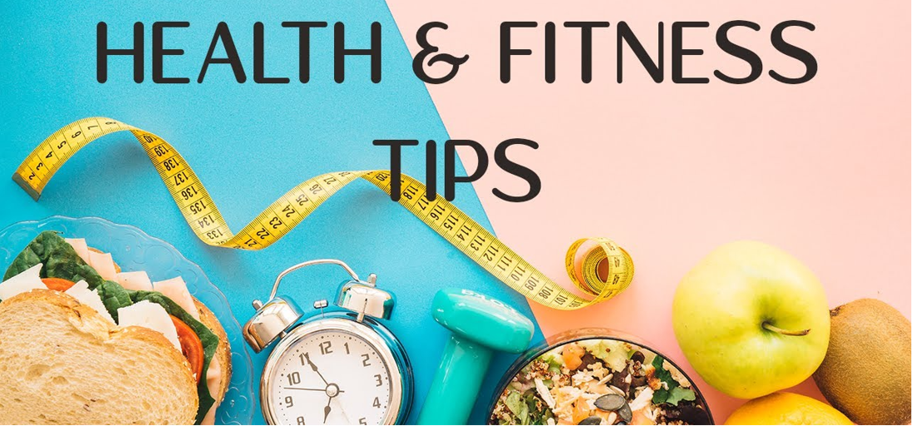
1.Do not skip breakfast
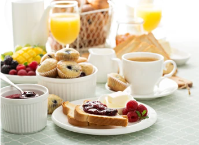
Skipping breakfast will not help you lose weight. You could miss out
on essential nutrients and you may end up snacking more throughout
the day because you feel hungry.
2.Eat regular meals
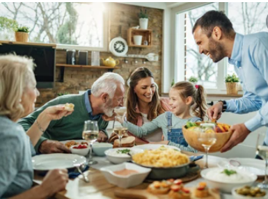
Eating at regular times during the day helps burn calories at a faster
rate. It also reduces the temptation to snack on foods high in fat and sugar.
3.Eat plenty of fruit and veg
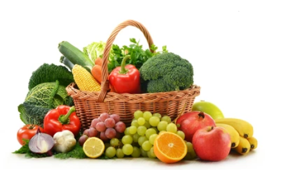
Fruit and veg are low in calories and fat, and high in fibre
– 3 essential ingredients for successful weight loss.
They also contain plenty of vitamins and minerals.
4.Get more active
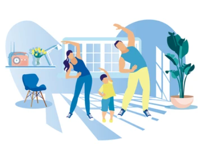
Being active is key to losing weight and keeping it off.
As well as providing lots of health benefits, exercise can help burn
off the excess calories you cannot lose through diet alone.
5.Drink plenty of water
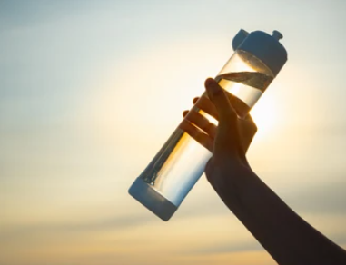
People sometimes confuse thirst with hunger. You can end up consuming extra
calories when a glass of water is really what you need.
6.Eat high fibre foods
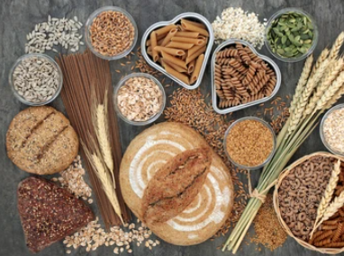
Foods containing lots of fibre can help keep you feeling full,which is perfect
for losing weight. Fibre is only found in food from plants, such as fruit and veg,
oats, wholegrain bread, brown rice and pasta, and beans, peas and lentils.
7.Read food labels
Knowing how to read food labels can help you choose healthier options.
Use the calorie information to work out how a particular food fits
into your daily calorie allowance on the weight loss plan.
8.Use a smaller plate
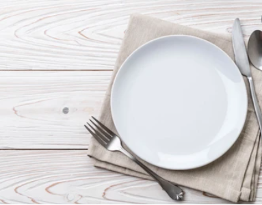
Using smaller plates can help you eat smaller portions.
By using smaller plates and bowls, you may be able to gradually get used to eating
smaller portions without going hungry. It takes about 20 minutes for the stomach
to tell the brain it's full, so eat slowly and stop eating before you feel full.
9.Do not ban foods
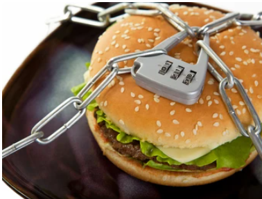
Do not ban any foods from your weight loss plan, especially the ones you like.
Banning foods will only make you crave them more. There's no reason you cannot
enjoy the occasional treat as long as you stay within your daily calorie allowance.
10.Do not stock junk food
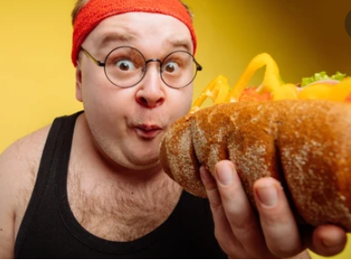
To avoid temptation, do not stock junk food – such as chocolate, biscuits,
crisps and sweet fizzy drinks – at home. Instead, opt for healthy snacks,
such as fruit, unsalted rice cakes, oat cakes, unsalted or unsweetened
popcorn, and fruit juice.
11.Cut down on alcohol
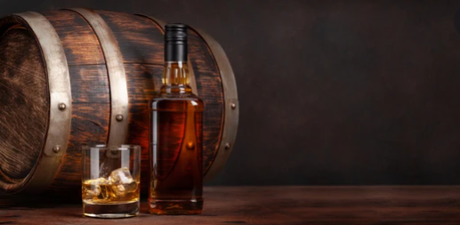
A standard glass of wine can contain as many calories as a piece of chocolate.
Over time, drinking too much can easily contribute to weight gain.
12.Plan your meals
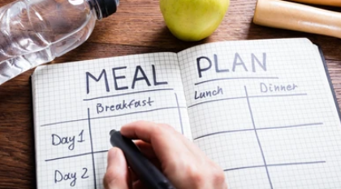
Try to plan your breakfast, lunch, dinner and snacks for the week,
making sure you stickto your calorie allowance. You may find it
helpful to make a weekly shopping list.